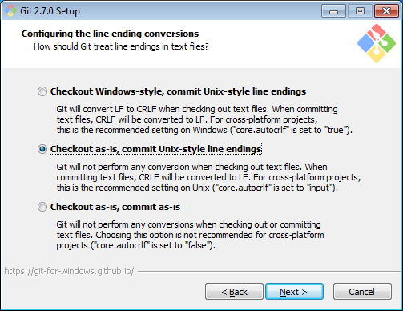

3.4.4. Installation by Source Using Anaconda Environment for Windows¶
Download and install the Anaconda Python Platform for Python 2.7 (make sure not to install Python 3.0+, which is incompatible with RMG). We recommend changing the default install path to
C:\Anaconda\in order to avoid spaces in the install path and be easily accessible. It is recommended to append Anaconda to your PATH as well as setting it as your default Python executable. All other settings can remain as their defaults.
Install Git, the open source version control package. When asked, append Git tools to your Command Prompt. It is also recommended to commit Unix-style line endings:
Open Git CMD or a command prompt (either by finding it in your Program Files or by searching for
cmd.exe. You may have to run the command prompt as an administrator. To do so right click oncmd.exe.and select Run as Administrator). Install the latest versions of RMG and RMG-database through cloning the source code via Git. Make sure to start in an appropriate local directory where you want both RMG-Py and RMG-database folders to exist. We recommend creating a folder such asC:\Code\git clone https://github.com/ReactionMechanismGenerator/RMG-Py.git git clone https://github.com/ReactionMechanismGenerator/RMG-database.git
Create and activate the RMG Anaconda environment
cd RMG-Py conda env create -f environment_windows.yml activate rmg_env
Every time you open a new command prompt and want to complie or use RMG, you must reactivate this environment by typing
activate rmg_env
Now you can compile RMG-Py
cd RMG-Py mingw32-make
Now it is recommended to modify your system’s environment variables. Please see Setting the RMG environment variable in Windows for more information.
Additionally, set the
PYTHONPATHenvironment variable to the path of your RMG-Py source folder to ensure that you can access RMG modules from any python prompt. The prompt might look like this:
If you set any new environment variables, you must now close and reopen the command prompt so that those environment variables can be refreshed and used.
Optional: If you wish to use the QMTP interface with MOPAC to run quantum mechanical calculations for improved thermochemistry estimates of cyclic species, please obtain a legal license through the MOPAC License Request Form. Once you have it, type the following into your command prompt
mopac password_string_here
You may now use RMG-Py, Arkane, as well as any of the Standalone Modules included in the RMG-Py package.
3.4.4.1. Test Suite¶
There are a number of basic tests you can run on the newly installed RMG. It is recommended to run them regularly to ensure the code and databases are behaving normally.
Unit test suite: this will run all the unit tests in the
rmgpypackagecd RMG-Py mingw32-make test
Database test suite: this will run the database unit tests to ensure that groups, rate rules, and libraries are well formed
cd RMG-Py mingw32-make test-database
3.4.4.2. Running Examples¶
A number of basic examples can be run immediately. Additional example input files can be found in the RMG-Py\examples folder. Please read more on Example Input Files in the documentation.
Minimal Example: this will run an Ethane pyrolysis model. It should take less than a minute to complete. The results will be in the
RMG-Py\testing\minimalfolder:cd RMG-Py mingw32-make eg1
Hexadiene Example: this will run a Hexadiene model with pressure dependence and QMTP. Note that you must have MOPAC installed for this to run. The results will be in the
RMG-Py\testing\hexadienefolder:cd RMG-Py mingw32-make eg2
Liquid Phase Example: this will run a liquid phase RMG model. The results will be in the
RMG-Py\testing\liquid_phasefoldercd RMG-Py mingw32-make eg3
ThermoEstimator Example: this will run the Thermo Estimation Module on a few molecules. Note that you must have MOPAC installed for this to run completely. The results will be in the
RMG-Py\testing\thermoEstimatorfoldercd RMG-Py mingw32-make eg4